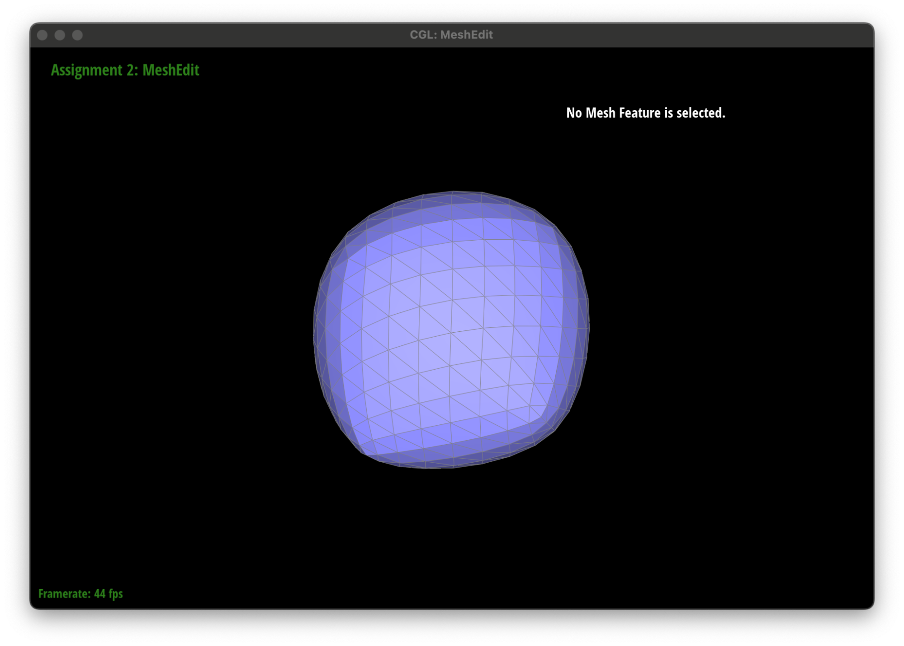

Project 2 Write-Up
By Riddhi Bagadiaa & Sela Roach
Link to Github pages: https://selaar.github.io/proj-webpage-template-airbears/
Overview
Give a high-level overview of what you have implemented in this assignment. Think about what you have built as a whole. Share your thoughts on what interesting things you have learned from completing this assignment.
- In this assignment we have implemented Bezier curves and surfaces utilizing de Casteljau’s algorithm, gained a thorough understanding of the half-edge data structure through implementing half-edge local mesh operations such as edge flip and edge split, which we used to implement loop subdivision.
- We learned that Bezier curves and surfaces are significant to represent smooth scalable curves and surfaces, and that 1D de Casteljau Subdivision algorithm involves linear interpolation and recursion for n control points with 1 parameter, while separable 1D de Casteljau’s algorithm involves n by n control points with two parameters.
- Also, we learned that triangle meshes are great at representing surfaces and 3D geometric models, and the half-edge data structure used to create a mesh is both inexpensive and convenient as it is flexible and simple through the half-edge connecting the elements of vertices, faces, and edges. Thus for the mesh operations, we learned to pay close attention to how the pointers are arranged amongst the mesh elements before and after the operation with split and flip.
Part 1
- Briefly explain de Casteljau's algorithm and how you implemented it in order to evaluate Bezier curves.
- De Casteljau’s algorithm is a recursive algorithm where given n control points and parameter t, we can use linear interpolation to find n-1 intermediate control points. At the next subdivision level, De Casteljau’s algorithm is applied on the n-1 points to give n-2 intermediate points. This is carried out recursively until 1 point is left. A curve is then drawn, passing through the two original end control points and the final single point.
- evaluateStep() is called at every level until the last level is reached. evaluateStep() takes in a vector of control points at that subdivision level. We iterate through these points, interpolating point i and i+1 using parameter t according to this formula
intermediate_point = (1 - t) * pointi + t * pointi+1
The intermediate points are stored in a vector which will be used in the next call to evaluateStep() for the next subdivision level.
- Take a look at the provided .bzc files and create your own Bezier curve with 6 control points of your choosing. Use this Bezier curve for your screenshots below.
- Show screenshots of each step / level of the evaluation from the original control points down to the final evaluated point. Press E to step through. Toggle C to show the completed Bezier curve as well.
- 5 intermediate control points
- 4 intermediate control points

- 3 intermediate control points
- 2 intermediate control points
- Show a screenshot of a slightly different Bezier curve by moving the original control points around and modifying the parameter t via mouse scrolling.
Moved the third control point. Used scrolling to change parameter t
Part 2
- Briefly explain how de Casteljau algorithm extends to Bezier surfaces and how you implemented it in order to evaluate Bezier surfaces.
- Bezier surfaces are for 2D surfaces. In this case as well, the end goal is to recursively run de Casteljau’s algorithm until we reach one final point. The surface then drawn passing through the four end points and this final control point.
- The steps to evaluate Bezier surfaces are as follows:
- We have a 2D vector of control points, i.e. n x n control points in the xy plane. Each point can be denoted as Pij where i and j are the row and column indexes respectively. u and v are the parameters used during interpolation for the x and y axes.
- We first go through every row. For each row Pi, we run de Casteljau’s algorithm on all the control points in that row. The procedure for doing this is the same as the one described in task 1, since this is 1 dimensional. In this case, parameter t = u.
- Once we have found one control point for each row, we now have a set of n control points. These control points are almost along a column. We interpolate these control points using t = v, to find one final control point. Running de Casteljau’s algorithm on this column of control points is also done in the same way as described in task 1.
- For Bezier surfaces, interpolation is done in both dimensions. We first interpolate n rows in the x direction and find n resulting points. We then use those n points to interpolate along the y direction to find one resulting control point, which is used to draw the surface.
- Show a screenshot of bez/teapot.bez (not .dae) evaluated by your implementation.
Part 3
- Briefly explain how you implemented the area-weighted vertex normals.
- To implement the area-weighted vertex normals, we first iterated through the faces incident to the vertex. We did this by getting the half-edge of the vertex and looping through the faces associated with the half-edge, adding its normal to our sum by using the face->normal(), going to the next of the twin of the current half-edge to get the next face, until we circled back to the same half-edge. Lastly, we normalized the sum of the normals by taking the unit() of the sum of our normals.
- To go into the specifics, to calculate the area-weighted vertex normals, you have to take the length (unit) of the cross product of two vectors, to get the area. However we didn’t need to do this as face->normal() already did the calculation for us, as it returns the unit face normal computed via the area vector, since the magnitude of the normal is proportional to the area of the face.
- Show screenshots of dae/teapot.dae (not .bez) comparing teapot shading with and without vertex normals. Use Q to toggle default flat shading and Phong shading.
- Without vertex normals
- With vertex normals
Part 4
- Briefly explain how you implemented the edge flip operation and describe any interesting implementation / debugging tricks you have used.
- To implement edge flips, we first drew a diagram of what it should look like before the edge flip and afterwards. Next, we applied the before diagram of the edge flip by getting all our half-edges, vertices, edges, and faces. Then, we reassigned these mesh elements to point to what they point to in the after the edge flip drawing. For example, for the half-edges along the original edge, we changed their vertices to point to the other 2 vertices. Changed edges such as e1 to point to the half-edge along face 1, changed e3 to point to the half-edge along face 0, and more. Following the drawing similar to that in the resource.
- In assigning elements, we utilized the setNeighbors function to reassign the half-edges next, twin, vertex, edge, and face. Lastly, we made sure to only alter the twin of the half-edges on the exterior of both triangles since they didn’t change from before to after.
- Show screenshots of a mesh before and after some edge flips.
- Write about your eventful debugging journey, if you have experienced one.
- Our debugging journey consisted of reassigning elements incorrectly either by conceptual mistake or a typo. Also, accidentally reassigning the exterior half-edges to an incorrect face. But through always going back to the drawing, we were able to catch these mistakes.
Part 5
- Briefly explain how you implemented the edge split operation and describe any interesting implementation / debugging tricks you have used.
- The image shown above was referenced to implement splitEdge() in an organized way.
- We first created variables and pointers for all existing vertices, faces, half-edges and edges.
- We then created new elements in the mesh. This includes 3 new edges. e6 and e7 are newly drawn and e5 was a result of splitting e0. Two new faces, f2 and f3 were added. One new vertex, v4 was added. For each newly added edge, half edges were added on both sides.
- We then reassigned all the variables to point to the correct faces/edges/halfedges/vertices according to the diagram on the right.
- Eg. h0->setNeighbors(h1, h3, v4, e0, f0) was called for halfedge h0, where h1 is the next() halfedge, h3 is h0’s twin(), v4 is the corresponding vertex, e0 is the associated edge and f0 is the associated face.
- For the newly added vertex, v4, we needed to assign it’s position, a 3D vector defining its location in the mesh. This was done by finding the midpoint of v0 and v1 using the midpoint formula. Shown below is how we got the vectors that make up the edge, and how we calculated the midpoint.
Vector3D v0 = e0->halfedge()->vertex()->position;
Vector3D v1 = e0->halfedge()->twin()->vertex()->position;
v4->position = (v0 + v1) / 2;
- Show screenshots of a mesh before and after some edge splits.
- Original image without flips and edge splits
- Show screenshots of a mesh before and after a combination of both edge splits and edge flips.
- Image after flips and splits (mixed combination of both)
- Write about your eventful debugging journey, if you have experienced one.
- One tricky part of the implementation was dealing with halfedge h6, h7, h8 and h9. These half-edges were part of the original diagram, and belonged to other triangles/ faces, that arent drawn. Therefore, we had to abstract away the information and assume that they remained in the same place after the split. Initially, during the split, we reassigned the names for those edges. However, this caused bugs because we didn't know the values of its next() and face() variable. To fix this error, we let h6, h7, h8 and h9 remain in the same location and modified their respective twin() variables.
- Overall, drawing the diagram was extremely helpful. It helped eliminate unnecessary typos and saved us from a lot of tedious debugging.
Part 6
- Briefly explain how you implemented the loop subdivision and describe any interesting implementation / debugging tricks you have used.
- To implement loop subdivision we followed the steps detailed within MeshResampler::upsample. For example, first we computed the new positions for all the vertices in the input mesh and stored them in Vertex::newPosition. To do this, we iterated through all the vertices of the mesh, and for each vertex, got the degree, and set u = 3/16 if the degree was 3 or u = 3/8n, then we calculated the newPosition for the old/current vertex by doing float arithmetic such as 1 - n * u * vector position + u * original neighbor position sum. To get the original neighbor position sum, we created a helper function that for a given vertex, took the sum of all the vertices positions around it, by getting the opposite half-edge vertex, and then moving to the next outgoing half-edge of the vertex until we reach the half-edge we started with. Lastly, for this first step, we set the vertex isNew parameter to false, to decipher between old and new vertices.
- Second, we completed the updated vertex positions associated with edges, so the vertex positions of the new vertices, storing it in edge::newPosition. We did this calculation by first get the vertex on the left of the edge as A, the vertex on the right of the edge as B, and the vertices directly above and below the new vertex at the midpoint as D and C respectively. Thus vertex A was given by the edge’s halfedge vertex position, vertex B was given by the edge’s halfedge twin vertex position, vertex C given by the edge’s halfedge next next vertex position, and vertex D by the edge’s halfedge twin next next vertex position. We then performed the float calculation: ⅜ * (A + B) + ⅛ * (C + D), set the edge’s newPosition to this, and set the edge isNew attribute to false.
- Third, we split every edge in the mesh that was not a new mesh by calling our mesh.splitEdge function, and we were able to prevent splitting new edges by keep track of how many edges were originally in the mesh prior to this step, and the iterating through all the edges of the mesh up until we reached that count, since newly created edges are appended to the end of the mesh.edges list. Since mesh.splitEdge creates and returns a new vertex, we updated this new vertex newPosition to be the edge’s new position, the value we calculated in the previous step for that given edge.
- Fourth, we flipped any new edge where e->isNew is true, that also connects an old and new vertex, old given by e->isNew is false, and new by e->isNew is true. Thus for each edge, we got the vertices that are connected to the edge, vertex 1 being the edge’s half edge vertex, and vertex 2 being the edge’s halfedge twin vertex. Then called mesh.flipEdge on this edge.
- Lastly, we copied over the new vertex positions in the final Vertex::position by going through all the vertices of the mesh and setting the vertex::position to the vertex::newPosition.
- Take some notes, as well as some screenshots, of your observations on how meshes behave after loop subdivision. What happens to sharp corners and edges? Can you reduce this effect by pre-splitting some edges?
- Some observations we noticed on the behavior of meshes after loop subdivision is that sharp corners and edges become more rounded and have an overall effect of being less coarse and pointy, the more we do loop subdivision. Also, we noticed that as the triangles get smaller with more loop subdivision iterations, the smoothing effect increases and the overall mesh has a finer detail/overall shape that it becomes more realistic.
- Yes, by pre-splitting some edges we can reduce the abrasiveness of the corners for the first subdivision loop, therefore in further subdivision loops, as the more the triangles become subdivided it will reach a better smoothness.
- Cube mesh
- Cube mesh 1 loop subdivision
- Cube mesh 2 loop subdivision
- Cube mesh 3 loop subdivision
- Cube mesh 4 loop subdivision
- Cube mesh 7 loop subdivision
- Cow mesh 1 loop subdivision
- Cow mesh 2 loop subdivision
- Cow mesh 3 loop subdivision
- Load dae/cube.dae. Perform several iterations of loop subdivision on the cube. Notice that the cube becomes slightly asymmetric after repeated subdivisions. Can you pre-process the cube with edge flips and splits so that the cube subdivides symmetrically? Document these effects and explain why they occur. Also explain how your pre-processing helps alleviate the effects.
- Given the original mesh of the cube, upon repeated subdivisions, it becomes asymmetric. This is because the triangles that make up the mesh are not symmetrically placed to begin with. Some vertices on the cube have more edges attached to them than others do. Therefore, upon subdivision, each face does not get subdivided in the same way.
- To avoid this, we can pre-process the cube by performing edge splits once on the diagonal edge of each face, so that the cube subdivides symmetrically. For example, by splitting each of the original edges on each side of the cube to form 4 equivalent triangles, this makes the entire cube symmetrical allowing it to subdivide symmetrically and become more sphere-like than before. Alleviating the effects of pointy bits in the mesh due to sharp edges with asymmetry.
- The image below shows that the diagonal edge on each face is split.
- The image below shows the result of 7 loop subdivision.Therefore in comparison to the cube without pre-splitting shown in the prior section, we can see this is more symmetric and sphere-like.